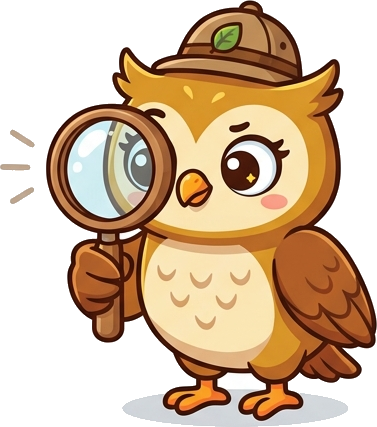

모험 지도
우리 주변에서 출발해 특별한 환경까지! 지역마다 동물을 모으고 분류 배지 도전을 완수하면 배지를 받아요. 배지를 모두 모으면 도감 마스터가 됩니다.

분류 연습
분류 기준을 보고 동물 카드를 직접 옮겨서 연습하세요. 채점하면 어떤 동물의 특징을 다시 살펴봐야 하는지 알려 줍니다.
카드를 눌러 고른 뒤 알맞은 칸을 누르거나, 직접 끌어서 놓아 보세요. 다시 더미로 돌릴 때도 이 칸을 누르면 돼요.
기준에 맞는 동물
기준과 다른 동물
위키백과가 새 창에서 열립니다. 도감으로 돌아오려면 새 창을 닫으면 됩니다.
현재 미션보다 앞서 다른 지역으로 이동하려고 해요. 이동할까요?
첫 방문 안내